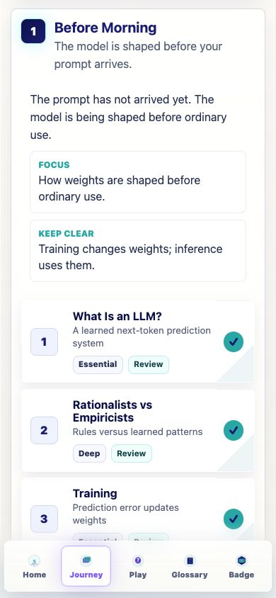
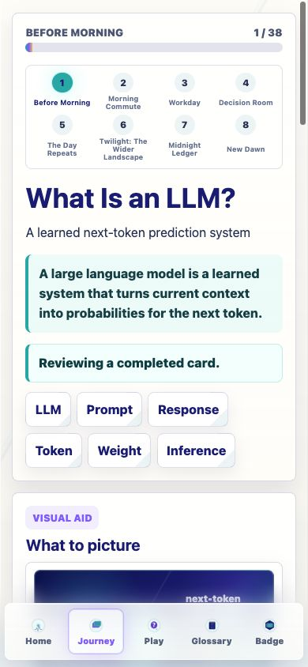
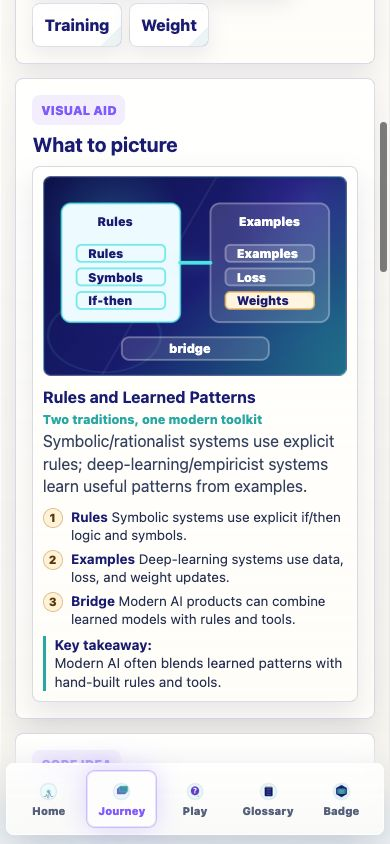
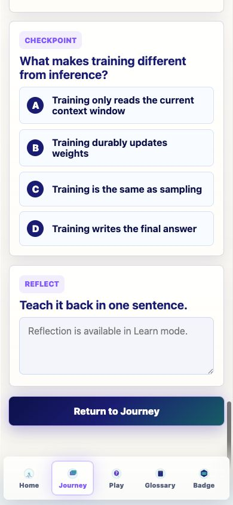
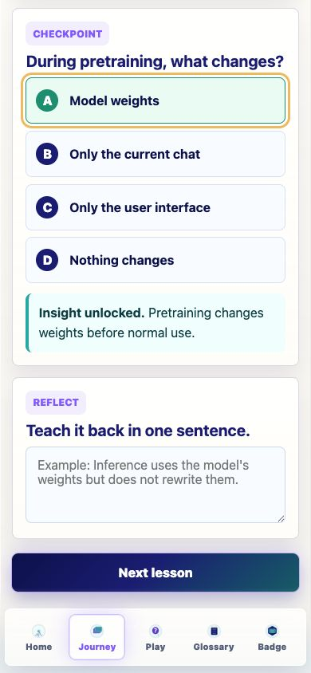
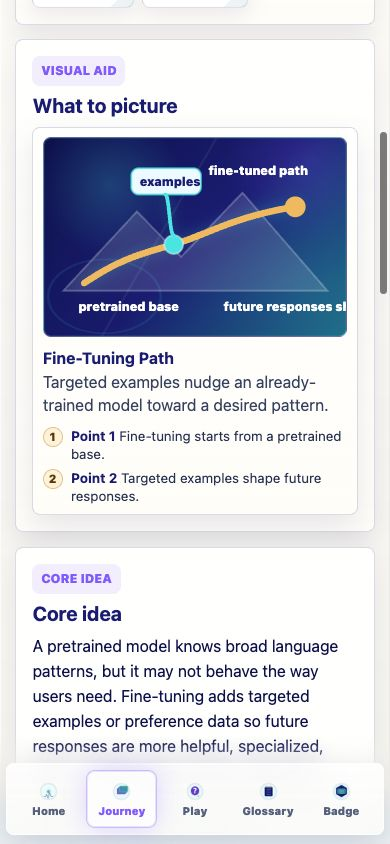
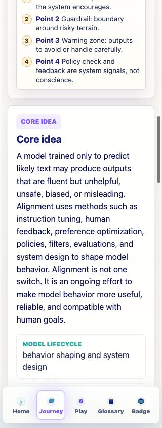

Prompt Life v0.17 internal review
Before Morning Stage Audit
Date: 2026-06-05. Scope: audit the current first Journey stage without implementing live curriculum changes.
Response Summary
The Before Morning stage is sound and should remain the opening stage. It correctly teaches that LLM behavior comes from weights shaped before ordinary use, and that training/fine-tuning can durably change weights while inference later uses them. The next pass should polish duplicated UI text, make Training versus Pretraining visually distinct, add a stronger Fine-Tuning contrast interaction, and make Alignment less dense without losing nuance.
Files Created
README.mdcard-inventory.mdrecommendations.mdstage-audit.jsonscreenshot-index.mdscreenshots/
Verification
npm install: up to date.npm run typecheck: passed.npm run build: passed with known large-chunk warning.npm run audit:answers: passed.- Browser QA: 390px screenshots plus 320/430 spot checks.
Cards Audited
| # | Card | Audit Recommendation | Next Implementation Focus |
|---|---|---|---|
| 1 | What Is an LLM? | Revise lightly | Add a concrete one-prompt trace. |
| 2 | Rationalists vs Empiricists | Revise / optional side-tour | Make the abstraction concrete. |
| 3 | Training | Keep | Emphasize loss and weight update. |
| 4 | Pretraining | Revise | Show scale and avoid perfect-recall myth. |
| 5 | Overfitting and Generalization | Keep as Deep | Keep coded plot and held-out examples. |
| 6 | Fine-Tuning | Revise lightly | Add contrast with prompting/RAG/sampling. |
| 7 | Alignment | Revise lightly | Group nuance visually and reduce screen density. |
Major Findings
- Keep one badge only:
Prompt Life: Model Literate. - Remove the duplicated
CORE IDEAplusCore ideapattern later. - Keep Training and Pretraining separate, but give Pretraining a scale-specific visual.
- Use Image 2 textless assets for What Is an LLM?, Pretraining, Fine-Tuning, and Alignment.
- Keep coded SVG for Rationalists vs Empiricists, Training, and Overfitting and Generalization.
- No urgent CSS 3D recommendation for this stage.
Recommended Next Implementation Prompt
Implement the v0.17 Before Morning polish pass from docs/stage-audits/v0-17-before-morning/. Do not add new cards or badges. Keep the stage order, preserve checkpoint randomization and progress rules, remove the duplicate Core idea heading pattern, revise only the seven Before Morning cards, add or refine tiny interactions where recommended, and update visuals according to the audit. Run typecheck, build, audit:answers, browser QA at 390px plus 320/430 spot checks, and update the internal report PDF with screenshots.
Screenshot: Before Morning Overview
The stage objective and first cards are visible at 390px.

Screenshot: What Is an LLM?
The first card frames LLMs as learned next-token prediction systems.

Screenshot: Rules and Learned Patterns
The split visual is useful but label-heavy, so it should remain coded SVG with simpler labels.

Screenshot: Training Checkpoint
The checkpoint directly tests durable weight updates versus ordinary inference.

Screenshot: Pretraining Feedback
Feedback capture did not press the lesson-advance action.

Screenshot: Fine-Tuning Visual
Fine-Tuning is a strong candidate for a hybrid/textless-image treatment with HTML callouts.

Screenshot: Alignment Core at 320px
Dense copy remains readable but confirms the need for visual grouping and less repetition per screen.
